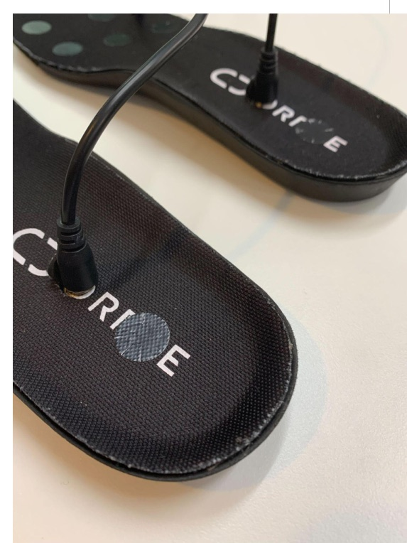
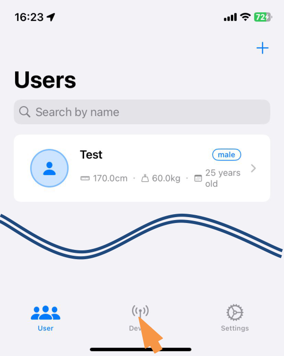
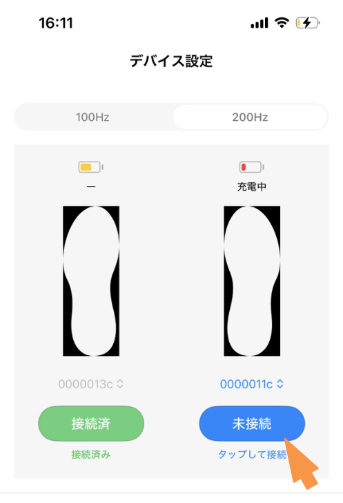
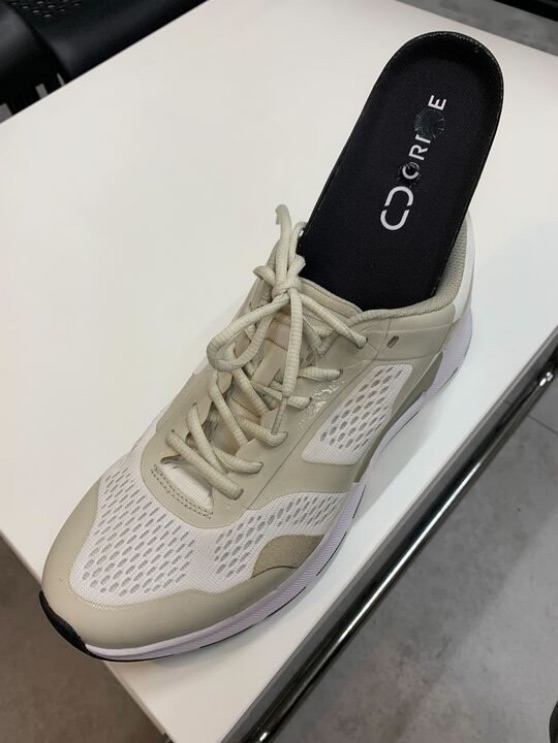
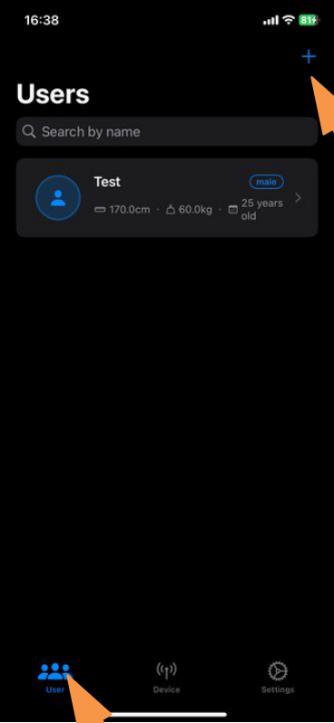
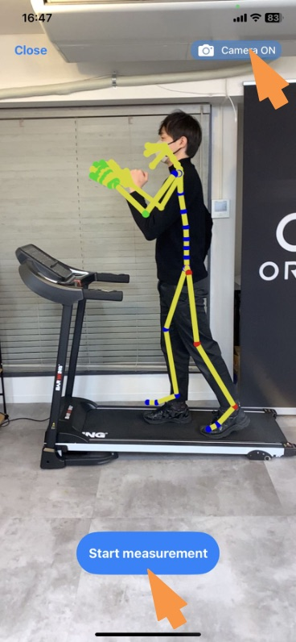
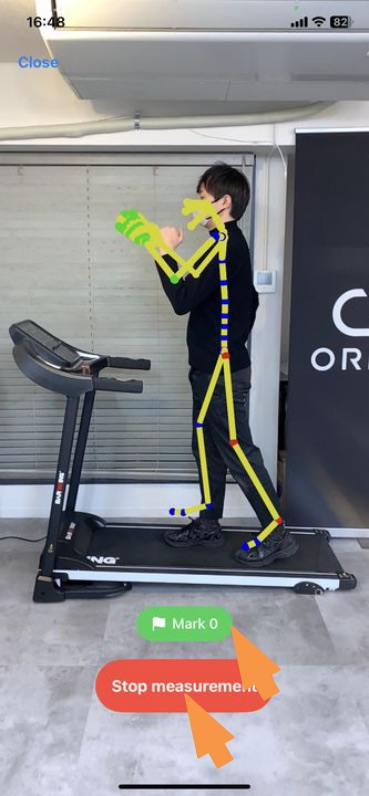
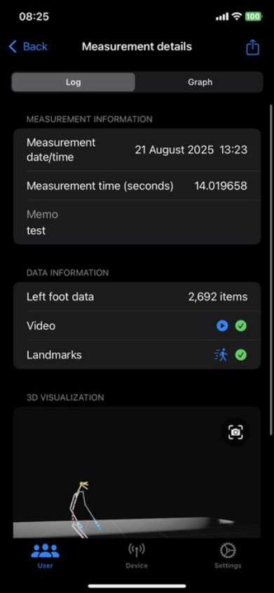
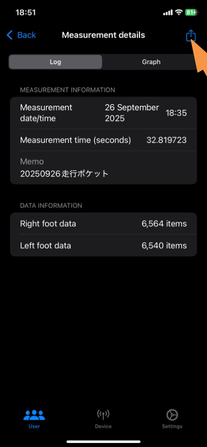

Official iOS companion app
ORPHE INSOLE DEMO App
Connect ORPHE INSOLE to an iPhone, record raw IMU and pressure data together with derived gait indicators, capture ARKit pose estimation at the same time, and export everything as CSV/JSON for secondary analysis.
ORPHE-INSOLE.js is a JavaScript SDK for browsers. The DEMO App is a native iOS application distributed via TestFlight to Evaluation Kit customers — it is not included in this repository. See below for how to get access.
App features
Measure, visualize, and export — no Wi-Fi required.
Connect and measure in one tap
Connect to ORPHE INSOLE with a single tap and start measuring immediately without complicated setup.
ARKit body tracking alongside insole data
Using the device's camera, pose estimation data from ARKit can be acquired and displayed simultaneously with the insole stream.
Research-ready data export
Export the acquired data in CSV/JSON format for secondary analysis on a PC and for research purposes.
Compatible with iPhone. The latest iOS version is recommended.
Connects to ORPHE INSOLE via Bluetooth Low Energy.
No Wi-Fi connection is required. Measurements can be taken in an offline environment.
How to get the app
Distributed via TestFlight to Evaluation Kit customers.
The DEMO App is not on the public App Store. Access is provided through TestFlight after you purchase the ORPHE INSOLE Evaluation Kit.
-
Purchase the Evaluation Kit
Purchase the ORPHE INSOLE β Evaluation Kit from the official ORPHE store.
-
Send your Apple ID email address to ORPHE
Email the address linked to your Apple ID to your ORPHE representative. You will receive a TestFlight invitation. The app can be installed on up to 2 devices.
-
Install via TestFlight
Install the TestFlight app, then tap "Get" on the link in the invitation email. On first launch, grant "All" permissions for Bluetooth and the camera.
ORPHE INSOLE setup
Charge, pair, connect, and insert.
-
Charge
Open the terminal section of the insole, connect the cable, and charge for approximately one hour before use.

-
Open the pairing screen
Tap the icon in the middle of the bottom of the app screen to open the pairing (Device) screen.

-
Connect
Enter the 8-digit device ID and press the "Not Connected" button to connect the insoles to the app.

-
Insert
Insert the insole into any shoe.

Measurement workflow
Register a user, measure, review, and export.
-
Register a user
Tap "User" in the bottom left corner, then the "+" button in the upper right corner of the Users screen, and enter the information of the person being measured. Measurement is possible even if the information is not entirely accurate.

-
Start measurement
Select the user and press the "+" button in the bottom right corner. To use 3D pose estimation, make sure the button in the upper right corner is set to "Camera ON". Press the button in the lower center to start.

-
Mark and stop
During measurement, press the green Mark button to record a marker. To end the measurement, press the button in the lower center, then name and save the recording.

-
Review the data
Select the user, choose a measurement from the history, and inspect it as a log or as graphs. Run gait analysis here for 100Hz measurements.

-
Export
Open the measurement details, press the share button in the upper right corner, and select the output destination (AirDrop, Files, mail, etc.). A ZIP archive with the files described below is exported.

Sensor reference
Sensor coordinate system and pressure sensor placement.
This frame applies to the ORPHE INSOLE hardware itself — the same convention is used by the DEMO App CSV output and by the raw values you receive through ORPHE-INSOLE.js.


Figures from the official ORPHE INSOLE DEMO App User Manual.
- FrameRight-handed coordinate system, Z-up.
- YToe direction (long axis of the insole).
- XTo the right of the toe direction.
- ZNormal of the insole top surface (upward). At rest, accZ measures approximately +1 G.
- Pressure6 points per foot: 1 toe (medial), 2 ball (medial), 3 toe (lateral), 4 ball (center), 5 midfoot (lateral), 6 heel.
press.values[i] corresponds to pressure sensor i + 1 in this figure, and gotConvertedAcc / gotConvertedGyro return values in this frame. Verify the channel mapping on your own device (e.g. stand on the toes, then on the heel) before relying on placement-specific logic.
Output data reference
Files exported by the DEMO App.
One measurement exports the raw sensor stream per foot, ARKit landmarks when the camera was on, and — for 100Hz measurements with gait analysis — per-stride gait files.
sensor-{left/right}.csv
Raw sensor stream per foot. Axes follow the sensor coordinate system above.
| Field | Definition | Unit |
|---|---|---|
| timestamp | UNIX timestamp in seconds, including millisecond precision. | s |
| accX / accY / accZ | Acceleration along the X / Y / Z axes. | G |
| gyroX / gyroY / gyroZ | Angular velocity around the X / Y / Z axes. | dps |
| quatW / quatX / quatY / quatZ | Components of the quaternion representing the posture. | - |
| press1 … press6 | Values from pressure sensors 1–6 (see placement figure above). | N |
landmarks.json
ARKit pose estimation frames (when Camera ON). For joint definitions, see the ARSkeleton.JointName documentation.
| Field | Definition | Unit |
|---|---|---|
| frames | Data set of all recorded frames. | - |
| timestamp | Data acquisition time (elapsed time with millisecond precision). | s |
| frameNumber | Sequential number for each frame (0, 1, 2, …). | - |
| joints | Data set of detected body parts (joints, facial features, etc.). | - |
| [part name] | Specific body part name (e.g. head_joint, right_hand_joint). | - |
| x, y, z | Position in 3D space with the device's camera as the origin. | m |
root— overall reference point / ルート（全体の基準点）hips— pelvis / 骨盤（腰）spine— spine / 脊椎（背骨）neck— neck / 首head— head / 頭jaw,chin— jaw, chin / 顎・顎先eye— eye / 目nose,cheek— nose, cheek / 鼻・頬shoulder— shoulder / 肩arm— upper arm / 上腕（二の腕）forearm— forearm / 前腕hand— wrist / 手首handThumb— thumb / 親指handIndex— index finger / 人差し指handMid— middle finger / 中指handRing— ring finger / 薬指handPinky— little finger / 小指upLeg— thigh / 太ももleg— shin / すねfoot— ankle / 足首toes— toes / つま先
gait_analysis_{left/right}.csv
Per-stride gait analysis. Output only when 100Hz is selected on the connection screen and gait analysis is performed on the measurement viewing screen.
| Field | Definition | Unit |
|---|---|---|
| leg | 0: left / 1: right. | - |
| position | 0: sole of the foot. | - |
| time | Time of data acquisition. | s |
| timestamp | Timestamp at the time of data acquisition. | - |
| duration | Time taken per stride. | s |
| stride | Distance covered in one stride. | m |
| speed | Foot movement speed. | m/s |
| footAngle | Angle of the long axis of the foot relative to the direction of travel; an indicator of in-toeing / out-toeing. | degree |
| swingWidth | Range of lateral movement during the swing phase. | m |
| footStrike | Angle between the shoe and the ground surface upon landing. | degree |
| pronation | Angle at which the foot collapses inward upon landing. | degree |
| strideMaximumVerticalHeight | Maximum height the foot reaches during the swing phase. | m |
| strideMinimumVerticalHeight | Minimum height the foot is raised during the swing phase. | m |
{left/right}-primary.csv
Per-stride event metrics around InitialContact, FootFlat, and ToeOff.
| Field | Definition | Unit |
|---|---|---|
| cadence | Strides per second. | /s |
| stancePhaseDuration | Time spent in the stance phase during the period from foot flat to foot flat. | s |
| continuousStancePhaseDuration | Time the foot is in contact with the ground during one stride. | s |
| landingForce | Magnitude of the impact received from the ground upon landing. | kgf |
| swingPhaseDuration | Duration of the swing phase within the period from one foot flat to the next. | s |
| toeOffAngle | Angle between the shoe and the ground when the foot leaves the ground. | degree |
| initialContactAcceleration{MIN/Max}.{x/y/z} | Maximum and minimum XYZ acceleration around the moment of landing (between InitialContact − 5 frames and FootFlat). | m/s² |
| initialContactAngularVelocity{MIN/Max}.{x/y/z} | Maximum and minimum XYZ angular velocity around the moment of landing (between InitialContact − 5 frames and FootFlat). | dps |
| toeOffAcceleration{MIN/Max}.{x/y/z} | Maximum and minimum XYZ acceleration around the moment of liftoff (between FootFlat and ToeOff + 5 frames). | m/s² |
| toeOffAngularVelocity{MIN/Max}.{x/y/z} | Maximum and minimum XYZ angular velocity around the moment of liftoff (between FootFlat and ToeOff + 5 frames). | dps |
| swingPhaseStrideVelocity{MIN/Max}.{x/y/z} | Maximum and minimum XYZ foot velocity during the swing phase, relative to the FootFlat posture coordinate system (between ToeOff and InitialContact). | m/s |
Gait indicators
Definitions and clinical references.
The DEMO App derives the following indicators from 100Hz measurements. Reference values and citations come from the official manual.
| Indicator | Definition | Unit |
|---|---|---|
| Walking speed | Average walking speed for a single measurement, calculated from the speed of each step. Walking speed is associated with various symptoms and is recommended in fall-prevention guidelines. Reported findings: an annual decrease of 0.01 m/s in people diagnosed with mild cognitive impairment [T Buraccui et al., 2010]; <1.0 m/s is a diagnostic criterion for frailty and sarcopenia [Satake S & Arai H, 2020]; <0.7 m/s is associated with a high risk of falls [Shimada H, 2009]. | m/s |
| Stride length | Stride length from the moment one foot touches the ground until the other foot touches the ground. The average is approximately 70 cm [Kirsten Götz-Neumann, 2005]. | m |
| Foot height | Height the foot is raised during the swing phase. | m |
| Swing width | Range of lateral movement of the foot during the swing phase. A positive value indicates outward movement. Increases with circumduction gait and scissor gait. | m |
| Stance phase (swing phase, double-leg support phase) | Stance, swing, and double-leg support phases as percentages of one stride (single leg = 100%). In typical walking, stance is 60% (double-leg support 20%, single-leg support 40%) and swing is 40%. An increase of the double-leg support phase (to about 30%) has been reported in frailty [Schwenk M, 2014]. | % |
| Variability of the gait cycle | Coefficient of variation of stride time. Higher values indicate a more unstable gait. A value of 2.54% or higher during normal walking has been associated with a higher risk of falls [Arai et al., 2011]. | % |
| Landing angle | Angle between the sole of the foot and the ground surface upon landing. | ° |
| Toe-off angle | Angle between the sole of the foot and the ground surface when the foot leaves the ground. | ° |
| Pronation | Angle at which the foot collapses inward from landing to the point where the sole makes full contact with the ground. | ° |
| Foot angle | Angle of the toes relative to the direction of travel. A positive value indicates that the toes point outward. | ° |
| Landing impact | Peak acceleration (3-axis norm) applied to the foot upon landing. | m/s² |
Support
Questions about the DEMO App or the Evaluation Kit?
Contact us through the inquiry form on the official website. For questions about the browser SDK, open an issue on the ORPHE-INSOLE.js GitHub repository.